A life-sized, waist-up humanoid robot built by a 16-person student team to serve as an AI-powered teaching assistant, commissioned by a physics professor at Western University.
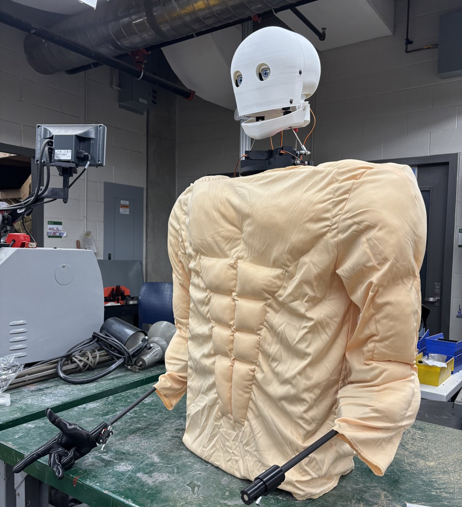
The finished robot wearing its padded muscle suit, which gives the arms a more natural, human silhouette under clothing.
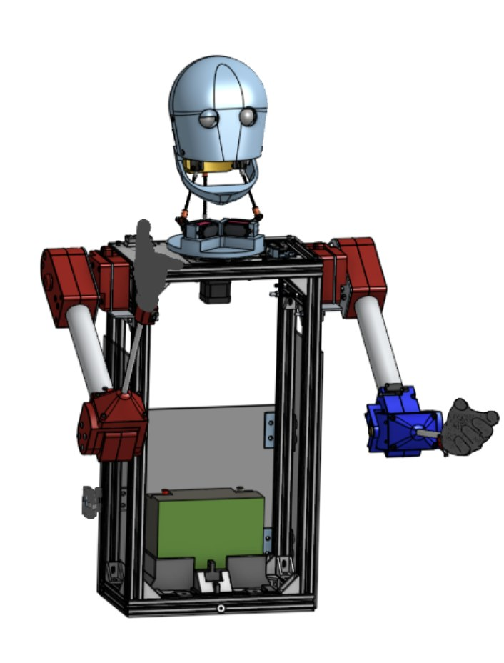
Full assembly CAD. The waist-up frame houses the compute, power, and both arm subsystems.
Baker Bot is a waist-up humanoid robot commissioned by Dr. Mark Baker, a first- and second-year physics professor at Western University, to act as an AI-powered teaching assistant that answers questions and reacts during lectures. A team of 16 students split the build across six subsystems: software, electrical, arms, head, neck, and torso. The finished robot turns and tilts its head, moves its eyelids and jaw, and gestures with both arms while responding to spoken questions. The full build came in under $2,000.
I led the arm subsystem, a two-person team, and served as manufacturing lead for the whole robot, doing the bulk of the mechanical fabrication and final assembly.
Full Arm Assembly — SolidWorks, exported and compressed for web viewing.
Each arm has three functional stages: a manually indexed shoulder that sets the working height, a powered elbow that provides the main range of motion, and a swappable hand on the end of a carbon fiber forearm. The design assumes the robot sits at a desk in front of students, so the arm's job is to gesture expressively within reach of the tabletop, not to lift heavy loads.
The shoulder pivots on a single large bolt fixed to the torso. An aluminum plate on the arm carries five holes, and a spring-loaded indexing plunger in the body drops into the chosen hole to lock the shoulder at one of five angles. Because the robot works seated at a desk, this lets the operator set each arm's height to match the table before a session, freeing the powered elbow to handle the expressive motion. Two cut-and-drilled aluminum sheets per arm carry the load into the pivot.
Indexing the shoulder by hand keeps it simple, strong, and power-free, which spends the actuation budget where it matters: the elbow.
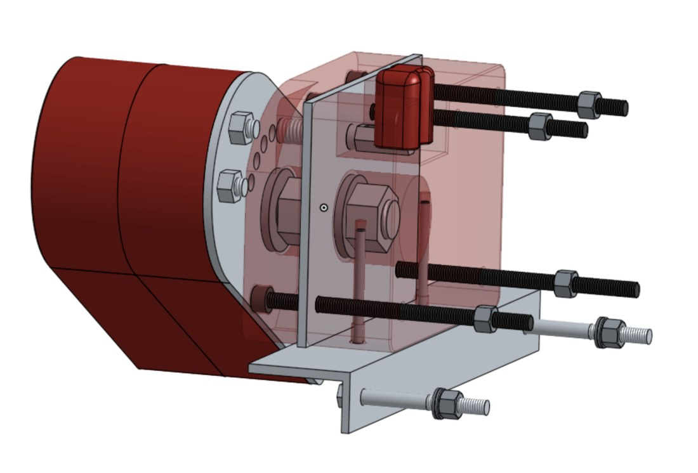
Shoulder pivot internals. The arm rotates on a fixed bolt and locks at one of five indexed angles.
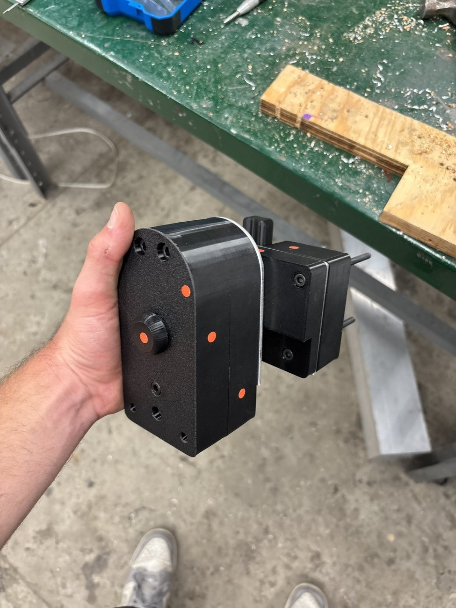
Printed shoulder housing with the pull-knob indexing plunger.
The elbow is the only powered joint in the arm and carries roughly 110 degrees of range. It is driven by a 12V DC worm gear motor. The worm drive is non-backdrivable by design, so the elbow holds any angle at zero holding current: the arm draws no power and generates no heat while posed, which matters for a robot that spends most of a lecture holding a gesture. A potentiometer built into the joint reports elbow angle in real time, so the controller always knows where the forearm is.
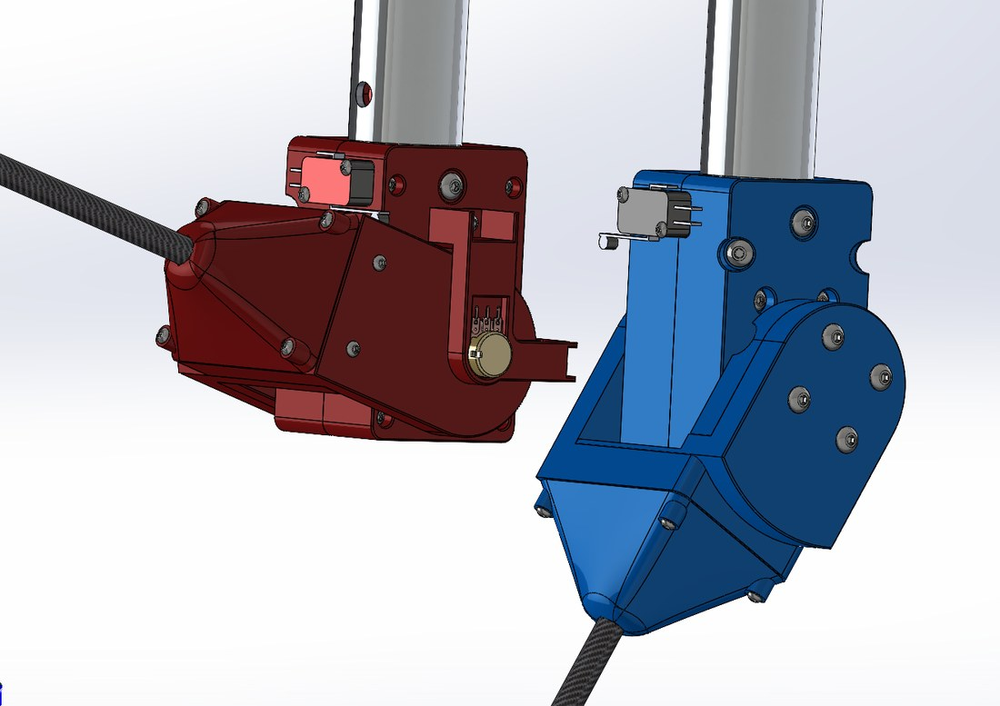
Elbow CAD. Worm gear motor, limit switch for homing, and an in-joint potentiometer for live position.
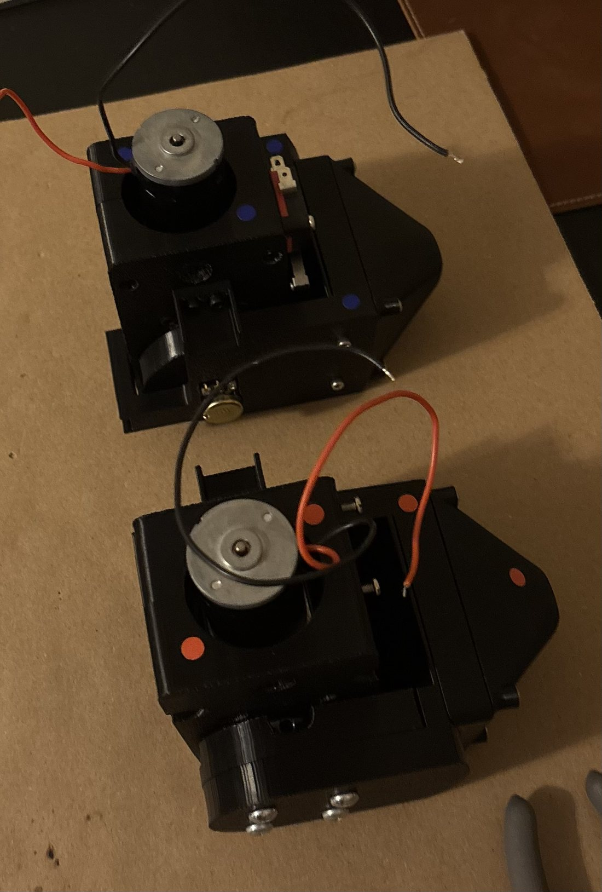
Both assembled elbow modules before integration.
Sizing the Elbow
The forearm and hand hang off the elbow as a cantilever, so the joint only has to hold their weight at full extension.
The selected worm gear motor is rated near 3 N·m, giving roughly a 3x safety factor on the static hold, with the non-backdrivable worm carrying the load at rest instead of the motor.
A same-size aluminum forearm would weigh close to double. Keeping the forearm light with carbon fiber keeps the elbow moment low, which is what lets a small, low-power motor hold position for a full lecture. Tip deflection of the carbon tube under the hand's weight is only about 2 to 3 mm, so the arm stays visually rigid while gesturing.
The forearm is a carbon fiber tube, chosen for stiffness at low weight. The hand mounts to the end through a quick-swap interface: a keyed turn-to-lock collar with a magnet that holds the hand seated. This lets the robot change hands for context, an open pointing hand for gesturing and explaining, and a closed hand that can hold an object. The hands themselves are printed and fixed rather than actuated, a deliberate scope cut to stay on budget without losing the expressive value of a posed hand. The open pointing hand doubles as the physics right-hand-rule gesture, a fitting default for a physics TA.
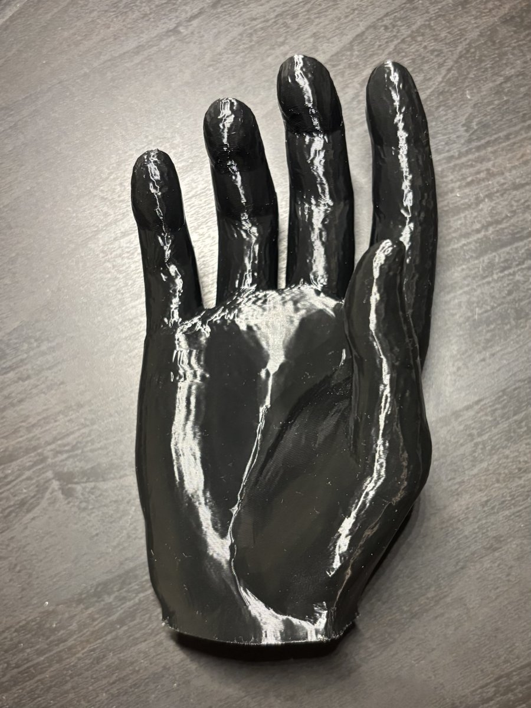
Printed hand, palm side.
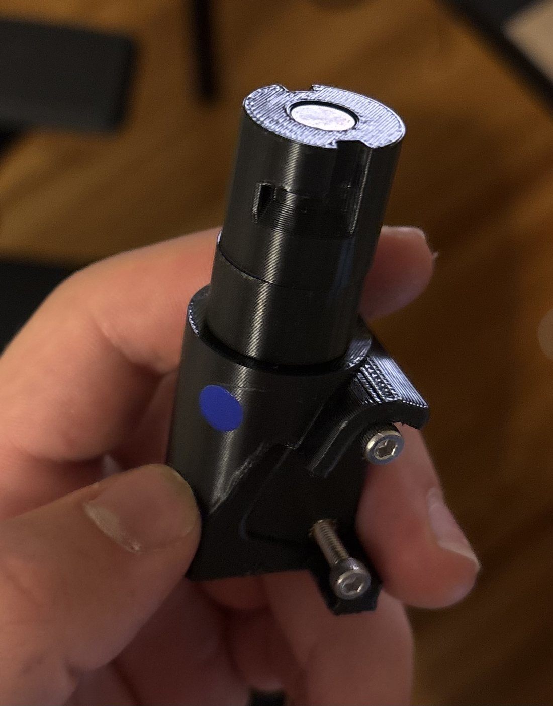
Quick-swap hand mount: turn to lock, held seated by a magnet.
I handled all of the arm's electrical work and integrated it into the robot's shared control system. At startup, a homing routine sweeps each arm until limit switches trigger, establishing the elbow's zero reference and the height of the table in front of the robot. During use, the in-joint potentiometer provides live elbow position. The arm's 12V worm gear motors run through a DC motor driver commanded by the system's ESP32-WROOM-32 controller, with the elbow potentiometer and limit switches wired back to that same board. Power comes from a 12.8V LiFePO4 battery, stepped down through buck converters on the electrical subsystem's power distribution board.
Gestures tie into the AI pipeline. An onboard Jetson Orin Nano handles speech-to-text and text-to-speech and passes each question to an external AI model, which returns a response plus an emotional tag. The robot speaks the answer while the arms play the gesture mapped to that emotion. Head and neck servos are driven separately through a PCA9685 PWM controller.
Every structural part on the robot was 3D printed, so I set a manufacturing standard that made parts come off the printer ready to assemble, with no cleanup and no failed fits. Details I built into every part:
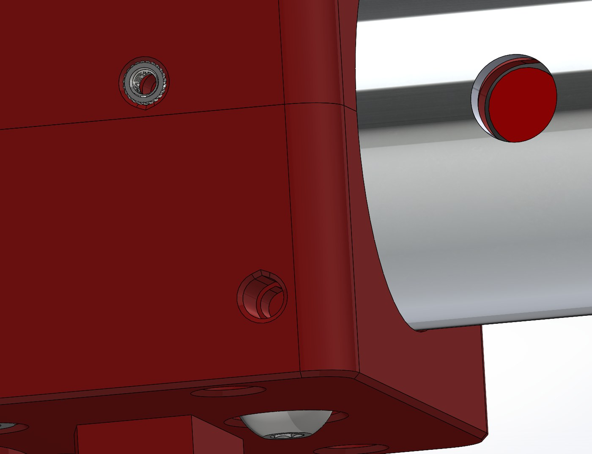
The manufacturing details built into every part: chamfered insert bosses, teardrop horizontal holes, and elephant's-foot chamfers.
As manufacturing lead I printed and assembled the complete arm subsystem and printed and assembled parts of the head and neck. I prototyped in PLA to iterate cheaply, then reprinted final parts in PETG for strength and temperature tolerance. Across the robot this came to roughly 50 unique printed parts. The non-printed structure I fabricated by hand: cutting and drilling the aluminum upper-arm tubes and shoulder plates, and cutting the carbon fiber forearms to length.
Leading a subsystem taught me to break a build into realistic long-term and short-term goals: near-term targets that keep a teammate learning and shipping at a steady pace, set early enough to leave room for team review and revision before integration. Rather than handing my teammate finished specs, I taught the shoulder and hand designs through the CAD itself, so the knowledge stuck and the work held up. Balancing my own design and fabrication load against mentoring and whole-robot assembly was the core challenge, and it is the part of the project I would point to for any team-based engineering role.
This is the project I point to when someone asks what I actually do as an engineer, because it never let me stay in one lane. Being both arm subsystem lead and manufacturing lead for the whole robot meant moving between CAD, electrical wiring, firmware, and a 3D printer farm in the same week, and being accountable for how well those pieces fit together at final assembly, not just for my own arm. A 16-person student build with a sub-$2,000 budget also has no room for a part that has to be redesigned after it is printed, which is why the manufacturing standards, the sizing math on the elbow, and the shoulder and hand mentoring all point the same direction: get it right on paper, with a tested reason behind the choice, before committing material or a teammate's time to it. That mix of technical range, budget discipline, and ownership past the edge of my own subsystem is what I'd bring to any team building real hardware on a deadline.
| Part | Qty | Cost |
|---|---|---|
| PETG filament, OVERTURE 2 kg (black) | 1 | $36.99 |
| Carbon fiber forearm tube, 8 x 10 x 420 mm | 2 | $35.98 |
| Aluminum upper-arm tube, 34 x 40 x 300 mm | 2 | $21.58 |
| 12V DC worm gear motor, 16 RPM | 2 | $92.04 |
| DC motor driver | 1 | $10.99 |
| Bearings | 1 | $17.89 |
| 8 mm hub with set screw | 1 | $13.99 |
| M8 spring indexing plunger | 1 | $16.99 |
| Fasteners, heat-set inserts, and hardware | $89.27 | |
| Total | $335.72 |
The arm subsystem came in at $335.72, part of a whole-robot build kept under $2,000.
A two-machine system that sweeps green erasers off an arena floor, carries them back to base, and sorts them by colour with no human input and no remote control. Built in eight weeks for a second-year design competition, where it placed 2nd.
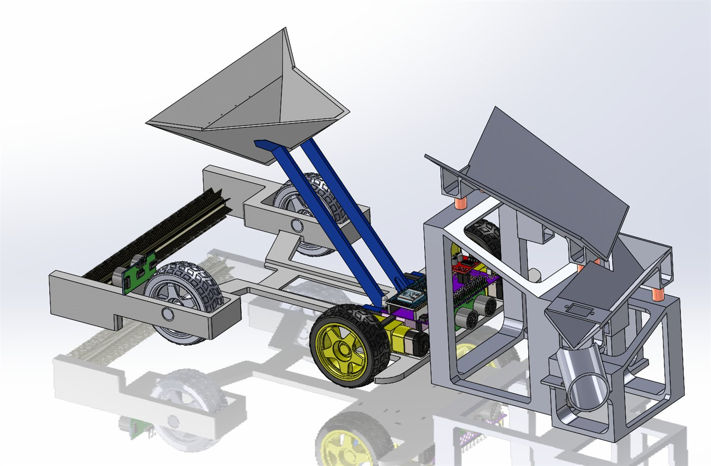
Full system CAD with the scoop at full lift, in the drop-off position over the sorting station.
The same assembly in 3D — drag to rotate, scroll to zoom.
The competition brief gave us 120 seconds, an arena of roughly 15 m², and a floor scattered with erasers. The system had to locate and collect them, tell green erasers apart from every other colour, and deposit them into the correct bin at a home base — entirely on its own, with scoring tied to both how many it collected and how accurately it sorted them.
The decision that shaped everything else was splitting those two jobs across two machines. A mobile scavenger robot drives the arena and sweeps up erasers without trying to identify anything, and a stationary sorting station at the home base does all the colour classification. Collection is fast and indiscriminate; sorting is slow and careful. Neither job compromises the other.
I led the sorting station and wrote the firmware and electrical integration for both machines. My teammates led the scavenger's mechanical design.
Why Sort at the Base Instead of Onboard
We scored three full system concepts through a Go/No-Go screen and then a weighted decision matrix. Onboard sorting kept failing the same way: a colour sensor riding on a moving robot sees changing ambient light, vibration from the drivetrain, and erasers tumbling past at unpredictable angles. Every one of those degrades a colour reading, and a misread costs points directly.
Moving the sensor to a fixed station fixes the sensing environment: consistent geometry, consistent lighting, one eraser presented at a time. The cost is that the robot has to come back to base — but it already had to, because that is where the bins are. The constraint was free.
The station takes a scoop-load of mixed erasers dumped in at the top and processes them one at a time: an inclined platform vibrates them into a single-file line, a colour sensor reads each one as it reaches the bottom, and a servo-driven chute swings to send it left or right.
Two vibration motors sit under the black feed platform, and rather than running both continuously, the firmware alternates them: motor one for 500 ms, then motor two for 500 ms, with no gap between. The alternating side-to-side pulse walks erasers down the incline and breaks up the clumps that form when a whole scoop-load lands at once. Running both together just buzzed the pile in place.
Both motors run on 20 kHz PWM, deliberately above the audible range so the station does not whine through a two-minute demo.
At the bottom, a single servo drives the chute between two fixed positions — 0° for non-green and 70° for green. There is no in-between and nothing to calibrate at runtime. The chute rests in the non-green position, so a sensing failure or a power glitch defaults to the reject path rather than contaminating the green bin.
The station running: erasers vibrating into single file, getting read one by one, and the chute swinging to divert the green ones.
The sensor is a TCS34725 running over I²C at a 50 ms integration time and 4× gain, and each decision averages three consecutive reads to damp sensor noise. The important step happens before any threshold is applied: the raw red, green, and blue counts are normalized against their own sum, so what the algorithm actually compares is each channel's share of the total light rather than its absolute value.
That one change is what makes the classifier survive real conditions. A green eraser under a bright lab light and the same eraser in shadow produce very different raw counts but nearly identical normalized ones. Absolute thresholds would have needed recalibrating every time someone turned on a different bank of lights in the room.
On top of the normalized values, an eraser has to clear six independent gates simultaneously to be called green. Any single failure rejects it:
| Gate | Threshold | What it rejects |
|---|---|---|
| Clear channel | ≥ 120 | An empty chute with nothing under the sensor |
| Normalized green | ≥ 0.40 | Anything not predominantly green |
| Normalized red | ≤ 0.32 | Yellows and oranges |
| Normalized blue | ≤ 0.32 | Teals and cyans |
| Green dominance | ≥ 0.080 | Greys and washed-out neutrals |
| Hue angle | 108–145° | Yellow-greens and blue-greens at the edges |
The gates overlap on purpose. Green dominance — the normalized green share minus whichever of red or blue is larger — catches the case where a colour is technically green-leaning but so desaturated that it is really grey. The hue window catches the opposite case: a colour saturated enough to pass the channel tests but sitting at the yellow or blue edge of green. A single threshold on green alone would let both through.
Passing the gates once is not enough to move the chute. The reading has to stay green continuously for a full second before the servo commits, and it has to stay non-green for a full second before the chute swings back. An eraser tumbling past the sensor, a shadow crossing the aperture, or a momentary reflection all produce single-frame misreads — and none of them survive a thousand-millisecond hold.
This is the cheapest reliability improvement in the whole project: a few lines of timestamp comparison that eliminated essentially every false trigger we saw on the bench. Across more than a thousand bench samples, the classifier produced no misclassifications.
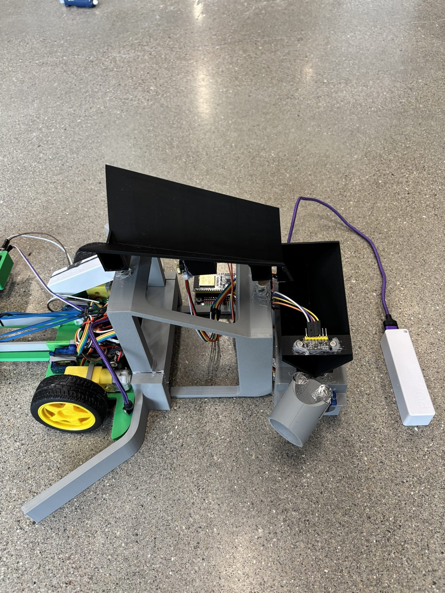
The station up close: black feed platform on top, and below it the chute with the colour sensor board mounted at its mouth.
The scavenger is a 3D-printed rear-wheel-drive chassis with two DC gear motors, a rotary brush across the front, and a servo-actuated scoop. The brush sweeps erasers back into the scoop as the robot drives forward, and reverses direction when the robot backs up so that the erasers already collected stay in rather than being swept back out. It averaged eight to nine erasers per collection pass.
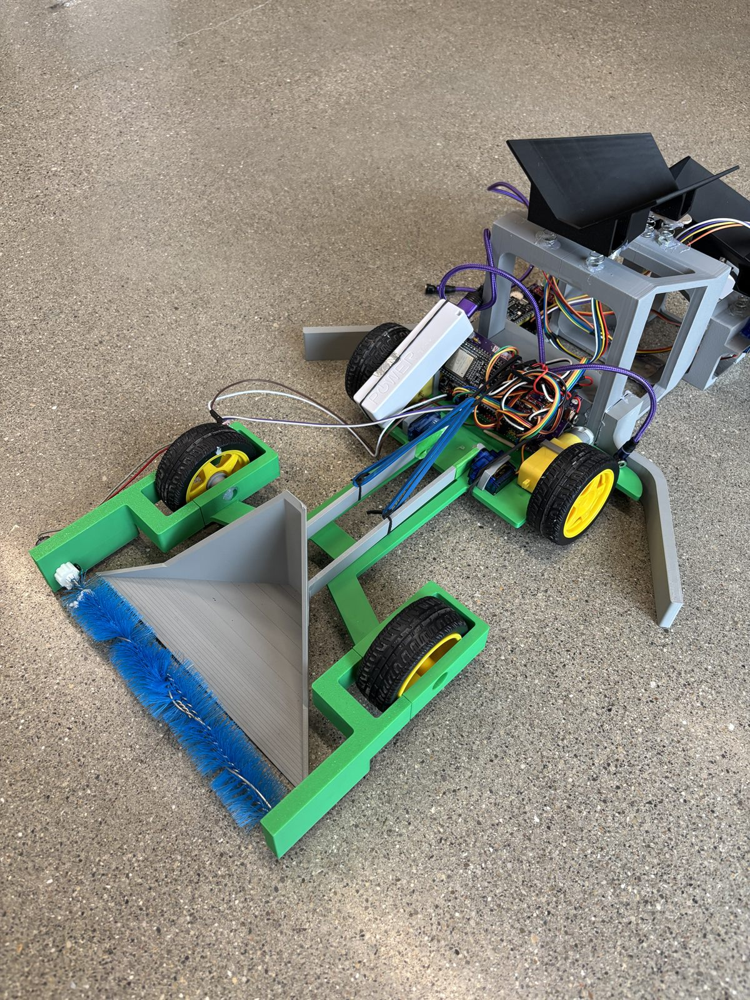
The built hardware: scavenger robot in front, sorting station behind.
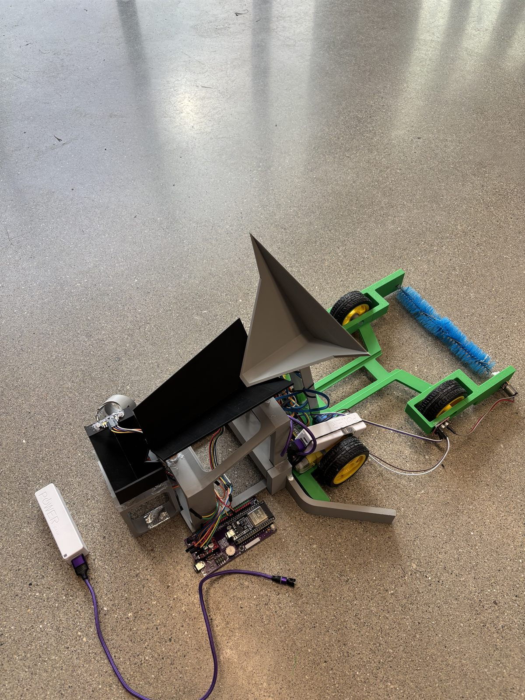
Hand-off: the robot reverses in and tips its scoop onto the feed ramp.
A full autonomous run: the scavenger sweeps a collection pass, reverses to base, and empties into the sorting station.
Both programs are built the same way: a single non-blocking loop driving an explicit state machine, with nothing blocking execution while it waits. On the sorter this matters because the vibration motors and the colour sensor have to run concurrently — the motor cycle cannot stall colour reads, and a colour read cannot stall the feed. Each keeps its own timestamp and advances independently.
The scavenger runs the larger machine: 27 states covering three collection passes, each one a sequence of drive out with the brush running, pre-lift the scoop to trap the load, reverse to base, align, lift fully, dump, lower, and turn to the next heading. The scoop lifts in timed one-degree increments every 25 ms rather than being commanded straight to its target, so the load is not thrown out by a sudden servo slew. During the reverse leg the scoop holds a 50° mid-lift, high enough to retain erasers but low enough to clear the station on approach.
Letting the Mechanism Absorb the Error
Our early design assumed closed-loop heading control for navigation. What actually shipped is dead reckoning: timed drive segments, a per-motor PWM trim to correct the chassis pulling to one side, and a potentiometer to tune overall drive speed between runs.
Position accuracy comes from the ultrasonic sensor and the station geometry instead. The robot reverses until the ultrasonic reads 15 cm from the base, then keeps driving for a fixed five seconds while a pair of funnel-shaped guide rails on the station physically pull the chassis into alignment. Rather than measuring the error and correcting for it in software, the rails mechanically remove it. It is a less sophisticated answer than closed-loop control and a considerably more reliable one over a 120-second run.
| Metric | Result | Requirement |
|---|---|---|
| Full autonomous cycle time | ~85.7 s | ≤ 120 s |
| Sorting accuracy | 90–92% | ≥ 90% |
| Collection rate per pass | 8–9 erasers | — |
| Misclassifications, bench testing | 0 / 1000+ | — |
| Competition placement | 2nd | — |
Two weaknesses showed up consistently in testing. When a full scoop landed on the feed platform at once, erasers would occasionally cluster and reach the sensor two at a time, which is the main source of the 8–10% sorting error: the classifier is accurate on a single eraser, so nearly every miss traces back to the feed presenting it with more than one. A metering gate that releases one eraser at a time, rather than relying on vibration alone to separate them, would close most of that gap.
The second is navigation. Dead reckoning worked because the arena was fixed and we could tune the timings against it, but the approach does not survive a change in floor surface or battery voltage, and the drift accumulates across three passes. The guide rails cover for it at the base, but a robot that had to hit an arbitrary target rather than a funnel would need real heading feedback.
The broader lesson I took from it is where to spend reliability effort. The two changes that most improved this system — normalizing the colour channels and requiring a one-second confirmation — were both software, cost nothing, and mattered more than any mechanical refinement we made. But the single most reliable part of the whole machine is a pair of passive plastic rails that do not sense anything at all.
Full firmware for both machines, CAD, engineering drawings, circuit schematics, and the complete design report are on GitHub: marcsmasgoret/Autonomous-Sorting-Robot.
As one of the lead designers on the powertrain subsystem for Western Engineering's Baja SAE team, I designed and manufactured a split drive shaft using U-joints. The design allows the engine and driver's seat to sit lower in the chassis, lowering the car's center of gravity and improving handling on the competition course.
A conventional single-piece drive shaft forces the engine and seat higher in the frame to maintain a straight driveline angle. This raises the center of gravity and limits how compact the chassis package can be.
The lowered driveline packaging contributed to a reduced center of gravity for the car, and the sprag bearing hub redesign removed a full transmission's worth of weight and complexity from the front axle.
A noble-metal-free high-entropy alloy catalyst engineered for overall alkaline seawater splitting, developed under Dr. Amir Mirzaei in Western's Department of Physics.
About 95% of hydrogen production today still relies on fossil fuels, and the catalysts that make green hydrogen viable through water electrolysis are usually made from platinum, iridium, or ruthenium, some of the rarest and most expensive metals on Earth. Scaling green hydrogen means replacing them with catalysts made from abundant, affordable elements, and doing it with seawater rather than freshwater, since freshwater is a limited resource while seawater is effectively infinite. My project, under Dr. Amir Mirzaei in the Department of Physics, was to design and optimize exactly that: a bifunctional catalyst for overall alkaline seawater splitting built entirely from earth-abundant metals. In parallel, the lab also had me working on high-entropy oxide semiconductors for photocatalytic hydrogen evolution, a related but separate thread not covered in the presentation below.
The catalyst is a high-entropy alloy (HEA), NiFeCoMoCr, electrodeposited onto nickel foam for high surface area. HEAs combine five or more elements into one alloy, which produces electronic and structural properties, the "cocktail effect", that none of the individual metals have on their own. I used AI and machine learning to process literature and experimental datasets and narrow down which metal combinations were most promising before committing lab time to them. Once the composition was set, I ran a systematic, iterative optimization of the fabrication process: testing nickel foam against titanium oxide nanotubes and carbon paper as substrates, sweeping electrodeposition pulse counts to tune coating thickness, and finally applying a hydrothermal ammonium fluoride treatment to reconstruct the surface and expose more active area. Each stage was evaluated by electrodepositing samples and testing them with linear sweep voltammetry, cyclic voltammetry, and Tafel analysis on a potentiostat, narrowing in on nickel foam, 6,000 electrodeposition pulses, and a mild 0.05M fluorination step as the best-performing combination.
I validated the optimized catalyst in simulated alkaline seawater (1M KOH with 0.5M NaCl added to approximate natural seawater chlorides) rather than just clean freshwater electrolyte, and it held up: strong resistance to chloride-driven corrosion and a stable potential over extended chronopotentiometry testing. Benchmarked against five recent high-entropy alloy catalysts from the literature and against noble-metal standards (RuO2 and Pt/C), the final catalyst matched the best oxygen-evolution performance and exceeded every catalyst in the comparison, noble metals included, on hydrogen evolution. I presented these results at Western's 2026 USRI Research Conference, and they're now being carried forward for publication, with an incoming student continuing the work in the lab.
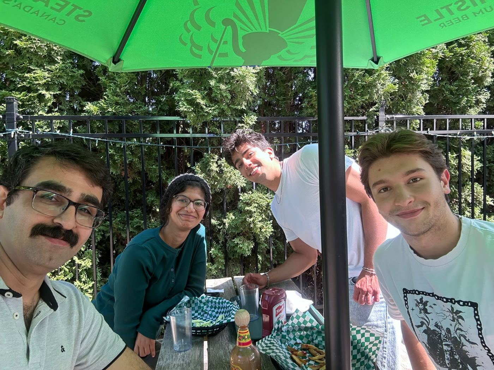
The research team in my lab.
Hydrogen and oxygen gas evolving off the two electrodes during a bench-scale electrolysis test in the lab.
My full end-of-internship USRI presentation, slide by slide.
Click to view the full presentation.
Routes out from a central station and finds its way back using IR beacon homing, with ultrasonic sensing for obstacle avoidance along the way.